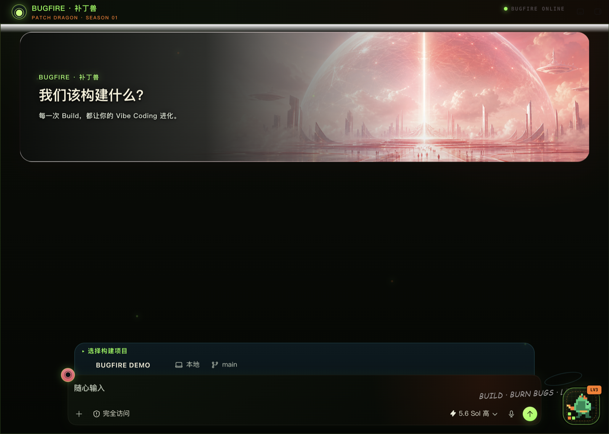
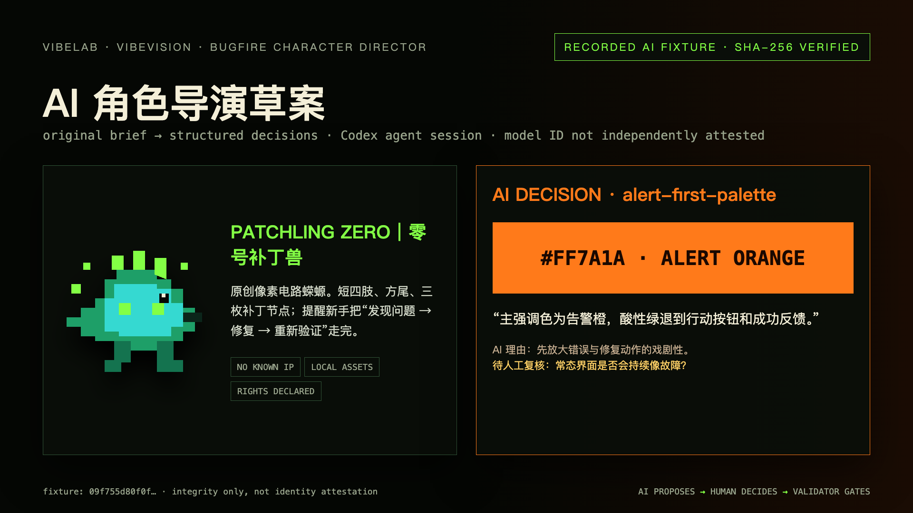
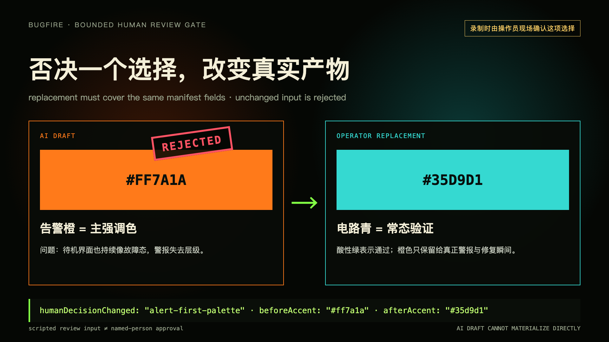
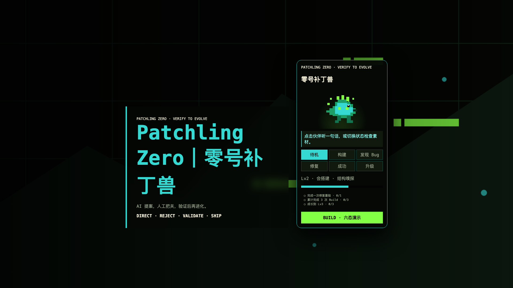

六状态动作反馈
待机、构建、发现 Bug、修复喷火、成功与升级。没上传的状态自动复用 idle 图。
Patch Dragon · Codex Desktop · Season 01
把 Codex 变成一只会陪你 Build、喷火除 Bug、一起升级的像素伙伴。默认包开箱即玩；上传一张背景和一张宠物图，就能用同一套系统做自己的版本。
DEFAULT EXPERIENCE // 实机截图

CHARACTER DIRECTOR // VIBELAB
新增 Character Director 不把一句 prompt 伪装成成品。它把原创角色 brief 编译成结构化 creative decisions；操作员必须拒绝并替换一项选择，之后仍由原有 pack validator 检查字段、路径、图片与权利声明。



离线 fixture 是该仓库 Codex agent session 的真实 AI 产出并由 SHA-256 锁定；重放不冒充 live API，checksum 不独立证明 model identity。review JSON 是可复现演示输入，公开声称“人工否决”前需由录制操作员现场确认。旧 75 秒 V2 仅作既有桌宠工程证据。
WHY BUGFIRE // 不只是一张皮肤
待机、构建、发现 Bug、修复喷火、成功与升级。没上传的状态自动复用 idle 图。
失败不加 XP，修复成功只结算一次。所有进度仅存在你的 Mac，不上传源码或任务内容。
Bugfire Pack + Codex Skill 自动校验、编译、预览和打包，不需要手改注入器。